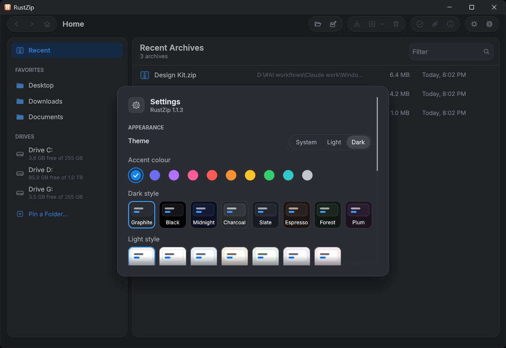

Feature
Browse archives like folders
Step into folders, search the whole archive and double-click to open a file.
Feature
Light and dark
Pick a theme, a window style and an accent colour.

Feature
Extract with progress
Jobs run in the background with speed, time left and Cancel.

Feature
Create archives
Choose a format and compression level, then add files.

Feature
Make it yours
Rearrange the toolbar and set RustZip as the default app.
